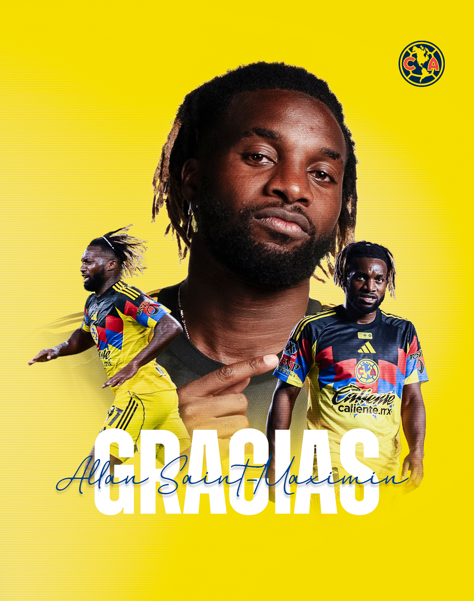

El Club América atraviesa un cierre de mercado de fichajes turbulento este 31 de enero de 2026. Tras vencer 2-0 al Necaxa en la Jornada 4 del Clausura 2026, la atención se ha desplazado de la cancha a las oficinas de Coapa debido a la inminente salida de piezas fundamentales.

El cierre de mercado ha sido devastador para las Águilas. Este sábado, el club confirmó un secreto a voces y una sorpresa dolorosa. Álvaro Fidalgo, el "Maguito" que se convirtió en el corazón del mediocampo azulcrema, se despide de Coapa para regresar a España con el Real Betis.
Vacío Creativo
Su salida deja un hueco que André Jardine difícilmente podrá llenar antes del inicio de la Copa de Campeones de la Concacaf, considerando que Fidalgo era el principal distribuidor de juego del equipo.
El adiós abrupto de Saint-Maximin
A esta baja se suma la salida oficial de Allan Saint-Maximin. El fichaje bomba del torneo anterior termina su aventura en México de forma inesperada. El francés denunció actos de racismo contra su familia, lo que aceleró una rescisión de contrato que ya se vislumbraba por su difícil adaptación a la altitud y al estilo de vida del país.

En apenas seis meses, el América pierde a dos de sus activos más valiosos y a su principal referente en la generación de peligro. La directiva tendrá que trabajar a marchas forzadas para reestructurar un plantel que, a pesar del triunfo ante Necaxa, luce herido en sus cimientos de cara al resto del Clausura 2026.